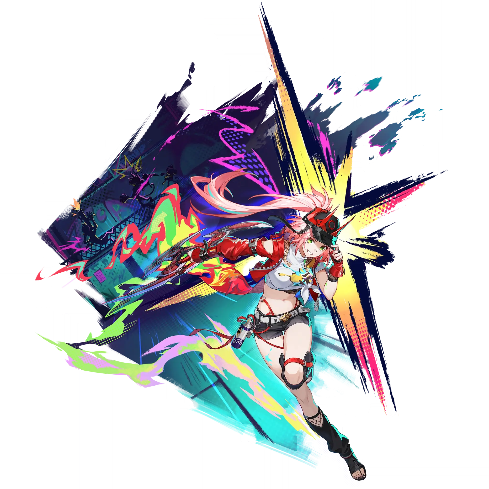

Rappa
Best Rappa build guide for Honkai Star Rail. See Rappa's best Relics, Light Cones, teams, Eidolons, Trace priority, and how to play Rappa.
🔍 Detail Skill
Semua skill aktif dan pasif beserta efeknya.
Deals Imaginary DMG equal to #1[i]% of Rappa's ATK to a single target enemy.
Launches Ningu: Demonbane Petalblade. The first 2 hits deal Imaginary DMG equal to #1[i]% of Rappa's ATK to one designated enemy and Imaginary DMG equal to #2[i]% of Rappa's ATK to adjacent targets, and the 3rd hit deals Imaginary DMG equal to #1[i]% of Rappa's ATK to all enemies. Enhanced Basic ATK will not recover Skill Points. Attacking enemies that don't have Imaginary Weakness can still reduc
Deals Imaginary DMG equal to #1[i]% of Rappa's ATK to all enemies.
Each time the enemy target is Weakness Broken, Rappa gains 1 point of Charge, up to a max of 10 points of Charge. When Rappa next launches the third hit of Ningu: Demonbane Petalblade, additionally deals Break DMG equal to #1[i]% of Rappa's Imaginary Break DMG to all enemies. This DMG can ignore Weakness Type to reduce 2 Toughness, consuming all Charge. Each point of Charge increases the Break DMG
After using Technique, enters the Graffiti state for 20 seconds. While in the Graffiti state, moves forward rapidly for a set distance and attacks any enemies touched. During the rapid movement, can block all enemies' attacks. Using an attack in the Graffiti state can end the state's duration early. After entering combat via attacking enemies, deals 30 Toughness Reduction regardless of Weakness Ty
⚔ Light Cone Terbaik
Diurutkan dari yang paling kuat. Persentase menunjukkan performa relatif terhadap pilihan terbaik.
💎 Relic Set Terbaik
Set terbaik untuk karakter ini, diurutkan berdasarkan prioritas.
📊 Stat Utama
Stat yang dicari pada tiap slot.
👥 Tim yang Direkomendasikan
Karakter yang sering dipasangkan bersama Rappa.
 The Dahlia
The Dahlia
 Tingyun • Fugue
Tingyun • Fugue
 Trailblazer • Harmony
Trailblazer • Harmony
 Ruan Mei
Ruan Mei
 Lingsha
Lingsha
🔗 Lanjutkan
Build ini dirangkum dari Prydwen Institute. Starwise tidak menghitung sendiri. Angka bisa berubah setelah patch atau karakter baru rilis.